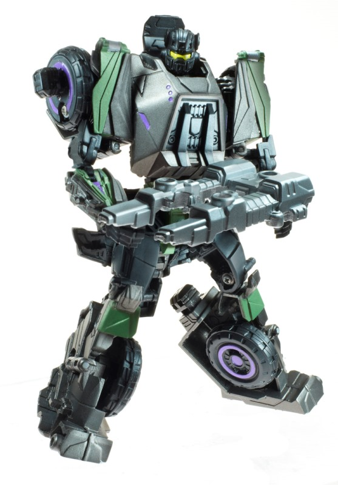

Size : Deluxe
Difficulty of Transformation : Easy
Color Scheme : Moderately light milky brown, and some black, silver, light purple, and dark charcoal gray
Individual Rating : 9.2
Allegiances
: Decepticon
Set Price
: $100 U.S.
Overall Rating
: 7.3
(NOTE: Because this set is composed of repaints,
this is not a full-blown review. This mainly covers any changes made to
the set and the color scheme, and merely compares it to the original versions
of these molds. For a review on the mass-release FoC Blast Off, go
here
.
For a review on the mass-release FoC Decepticon Brawl, go
here
.
For a review on the mass-release FoC Onslaught and the Bruticus gestalt,
go
here
. For a review on the mass-release
FoC Swindle, go
here
. For a review on the
mass-release FoC Vortex, go
here
.)
 Blast
Off
Blast
Off
Size
: Deluxe
Difficulty of Transformation
: Easy
Color Scheme
: Moderately light milky
brown, and some black, silver, light purple, and dark charcoal gray
Individual Rating
: 9.2
I have no idea why Hasbro
decided it would be a good idea to make the game-accurate paint jobs for
these toys a SDCC exclusive*, but here we are. Regardless, Blast Off's
accurate color scheme is more G1-ish (though lighter overall), with a rather
light muddy shade of brown being the dominant color for the mold. Purple
and silver form the main accent colors, with silver being particularly
prevalent all along the "piping" detailing along the engine, while the
purple is more obvious on the parts that would "glow" this color in the
game-- his chest, cockpit, and parts of his legs and guns. There's also
a bit of black and charcoal gray-- mainly visible in robot mode-- that
are used to give the whole scheme a dark color to contrast with, and in
what amounts it's used, it works well. I do wish the tan was either a bit
darker or a metallic shade, though-- it just looks too much like Blast
Off is made of mud, here. That said, there's plenty of paint detailing
(particularly in vehicle mode), so it's not like he's
all
muddy
brown, and all the colors do contrast fairly well with each other while
also adding a bit to the "steampunk" look of the toy.
No mold changes have
been made to this version of Blast Off.
 Decepticon
Brawl
Decepticon
Brawl
Size
: Deluxe
Difficulty of Transformation
: Easy
Color Scheme
: Dull military green,
black, and some dark military green, light purple, silver, and bright yellow
Individual Rating
: 7.5
Brawl is the least-changed
from his mass-release version; he's still green, though his green is a
more muted, military-esque color. Again, this is more accurate to the video
game like all the color schemes in this set, but even ignoring that it's
more appropriate than the brighter green on the mass-release version. For
the most part, the black paint and parts match up exactly between this
and the mass release version (the sole exception being the combiner port
piece, which is for some weird reason light purple on this toy). The main
difference beyond the duller shade of green here are the number of paint
apps; compared to the mass release, this version DEFINITELY has more. The
cannons are painted entirely silver, there's more dark green paint apps
along parts of the vehicle mode, and there's more light purple paint across
both modes to make him more accurate there, as well-- specifically along
his shoulders, waist, thighs, the top of his turret, and on his rear vehicle
thrusters. It all ends up making the toy look considerably less boring,
even with the duller main color; it's broken up so much more that it's
considerably more aesthetically pleasing to look at.
No mold changes have
been made to this version of Brawl.
 Onslaught
Onslaught

Size
: Deluxe
Difficulty of Transformation
: Easy
Color Scheme
: Dull brown, black,
and some light purple, silver, pale light green, metallic copper, red,
and bright yellow
Individual Rating
: 5.7
Onslaught, oddly, is
the only one out of this set that probably ISN'T more game-accurate than
his mass-retail toy. The Onslaught game model definitely had a fair bit
of dark greenish-blue in him, whereas this version replaces the dark blue
with a dull brown. On the one hand, it helps him fit better color-wise
with the rest of this set, but considering that the whole point of this
set was "game-accurate decos" it's a bit of a head-scratcher. I also think
the dull brown just plain doesn't look as good as the dark blue, either,
particularly when it comes to contrasting against the other colors-- it's
still okay, but not great. What this version of Onslaught DOES excel in
are the paint apps, which are many and varied across his chassis. The dull
green stripes (mostly across his vehicle mode) contrast well with both
the brown and the many light purple highlights along such areas as the
tires and robot chest (and, as noted, the light purple helps to accent
some details that are so important in maintaining the "FoC style" for the
toy). His dual-cannon has also been painted entirely silver, and just generally
looks great, as do the bright yellow optics on his robot head. The bits
of black are mostly used for the Bruticus and robot mode pieces, and look
decent enough, but not particularly noteworthy.
No mold changes have
been made to this version of Onslaught.
 Swindle
Swindle
Size
: Deluxe
Difficulty of Transformation
: Easy
Color Scheme
: Black, light pale
tan, and some light purple, silver, and metallic gunmetal gray
Individual Rating
: 7.2
This version of Swindle
switches in his bright yellow for a more game-accurate light tan color--
which also hearkens back a bit more solidly to his G1 toy, as well. It
serves decently enough as a main color, though I wish the tan had a bit
more metallic of a flavor to it-- like Blast Off, the prevalence of this
color on Swindle makes him look a bit like he's made out of mud here. The
black serves as a decent enough neutral color for everything to contrast
against here, and as usual for this set, there's more paint apps than on
the mass-release version, most of them involving new light purple paint
apps to help with the "FoC style" of the toy. The purple paint apps on
the wheels look super-cool and very "Decepticon-y" and angular, and there's
also a few more minor additional paint apps like on his headlights. There's
also a fair number of silver paint apps-- his entire gun is coated in silver
paint and looks aces, and the same goes for the tailpipe pieces on his
lower robot arms and the longer tailpipe pieces on his legs. He also has
some MUCH-needed silver paint on his face and forehead, this time. All
this said, though, I think a bit more color could've been added to the
midsection of the robot mode. All of that black there is begging for a
bit of purple paint detailing.
No mold changes have
been made to this version of Swindle.
 Vortex
Vortex
Size:
Deluxe
Difficulty of Transformation
: Medium
Color Scheme
: Moderately light pale
greenish brown, red, and some silver, light purple, bright yellow, and
black
Individual Rating
: 7.2
The SDCC version of Vortex
is another one of the Combaticons that gets a completely different color
scheme compared to his retail toy (and--unlike the others-- his G1 color
scheme, as well), featuring a duller shade of brown that has a hint of
a greenish hue to it, along with black and red serving as the main secondary
colors. The main shade of brown is-- like on Swindle and Blast Off-- a
bit flat and not metallic enough for my liking, given the "premium" price
point of the set, and I'm not fond of the greenish hue to it, either. That
said, the red contrasts against the duller colors of brown and black excellently,
and goes along with the silver paint apps on the windows and swords, as
well. Like with the other Combaticons in this set, Vortex has noticeably
more paint apps when compared to his mass retail version, and this is more
noticeable in robot mode on this guy with all the extra light "glowing"
purple paint apps. As I mentioned before, it helps add to the "FoC-ness"
of the character, and breaks up the colors a lot more. Plus, it just looks
cool and contrasts well with Vortex's otherwise generally "warm" colors.
No mold changes have
been made to this version of Vortex.
 Decepticon
Bruticus (Combined Form)
Decepticon
Bruticus (Combined Form)
Difficulty of Transformation
: Hard
Individual Rating
: 6.9
When all five Combaticons are combined as a whole into Bruticus, the color scheme overall "flows" considerably better here than on the mass release version of this gestalt. They're still obviously five separate toys combined into one, but-- with the exception of Brawl-- they all have some variation of brown as a main color, which-- combined with the black shared between all of them as well as the myriad light purple paint apps-- really makes Bruticus look more cohesive here. All this said, there are a few minor color quibbles I have about the gestalt mode overall. First, Swindle's, Brawl's, and Blast Off's combiner ports are all made of purple plastic, which I think looks a bit weird given that purple's only used as a highlight color otherwise on the toys. Plus, it looks a bit weird with Vortex being the odd 'Con out here, having the lone black combiner port among the team. Also, the combined weapon looks a bit "unfinished", as Vortex's, Swindle's, and Onslaught's guns are all painted silver, but Brawl's and Blast Off's guns are left black or light brown. The sudden color switch-- particularly with Blast Off's weapons-- just looks rather odd.
This SDCC Bruticus set is certainly the first choice for enthusiasts of the game that want a game-accurate color scheme for the toys (and you get them all at once as opposed to having to bother getting five different toys in an assortment, to boot). The color scheme overall fits together better in combined mode, and the additional of several more paint apps is definitely welcomed. That said, if you want to pick-and-choose, I think the mass retail of Blast Off looks the best color-wise, and Onslaught's mass retail version being oddly slightly more color-accurate than this version is definitely a head-scratcher. It's also more expensive getting this set compared to the other-colored versions of these toys, so that's something to take into consideration as well.
Reviews by Beastbot
*In addition to being released as an SDCC/Hasbrotoyshop 2012 exclusive, this set was also made available roughly a year later, boxed as a "Platinum Edition" set with a slightly-modified version of FoC Grimlock. This latter set was exclusive to several online retailers and actually cost slightly more than the SDCC release (at least its MSRP), but the colors and paint apps of both the SDCC and later "Platinum" releases are identical.
(Pictures from Hasbro .)